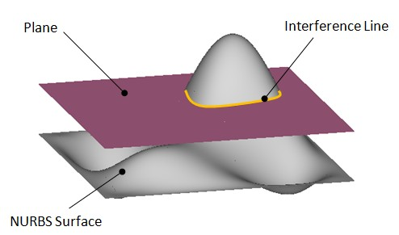
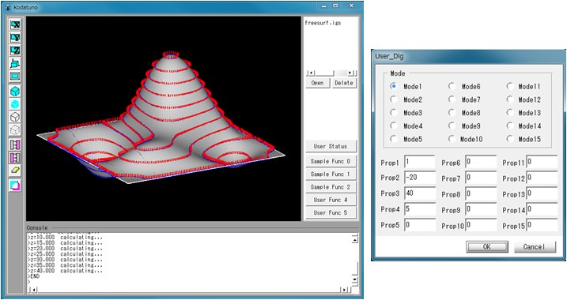
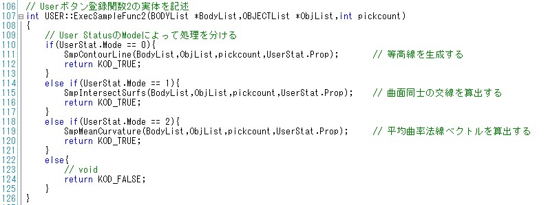
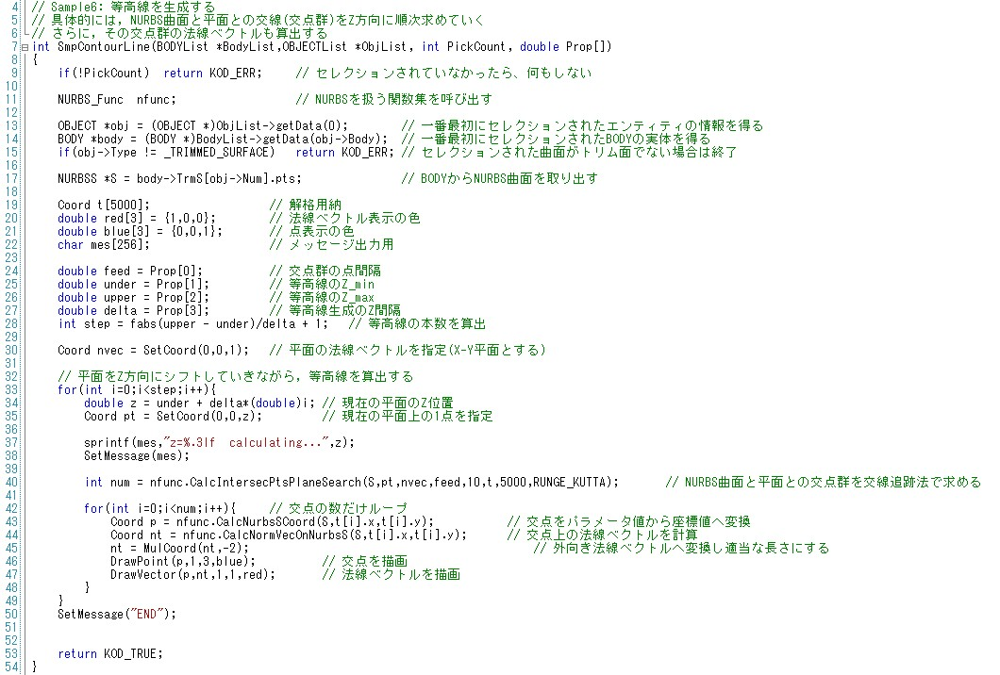

|
|
|
Prev
Index
Next |
(Ex. 6) 等高線を生成する
等高線は3次元空間上の曲面における，ある方向の値が等しい点の集合です．これを求めるということは，言い換えれば， 曲面と平面の干渉線をもとめるということになります． 本例題では，図に示すように，Z方向に平面をZ_minからZ_maxまであるシフト量Dでシフトしていきながら，それぞれの等高線を求めていきます． ここで，"等高線"と言っていますが，実際には点群によって表現しています． "SampleFunc2.cpp"のSmpContourLine()を実行します．
＜実行手順＞
- Kodatunoアプリケーションを起動し, 適当なIGESデータを1つ読み込みます．
- 表示されたBodyから面をピックします．ピックする面の数は1個にしてください．
- "User Status"からMode1を選択し，Prop1に交点群の点間隔(0.1〜2程度)，Prop2にZ_min, Prop3にZ_max, Prop4に平面のシフト量Dを入力します．
- "Sample Func 2"ボタンを押します．
- 選択した面上に等高線が生成されたことを確認してください．

＜ソース解説＞
今回はユーザー用ボタンの3つ目，"Sample Func 2"を押したことに注意してください．これによって"UserFunc.cpp"のUSERクラスのコンストラクタのExecSampleFunc2()が実行される ことになります(17行目)．ExecSampleFunc2()の実体は107行目からになります．
 Mode1を選択したので，UserStat.Modeには0が代入されており，111行目のSpmContorLine()が実行されることになります．
では，SmpContourLine()を見てみましょう．SmpContourLine()は"SampleFunc2.cpp"に記述されています． 9〜22行目まではこれまでの例題と同じですので，説明を省略します．19行目のCoord t[5000]は，等高線として得られた点群を格納するための箱として用意しています．
24〜27行目では，今回は4つのプロパティ値を入力しましたので，それらを取り出しています．28行目では平面をシフトさせる回数を計算しています． NURBS曲面と平面との交点群を算出する関数は40行目のNURBS_Func::CalcIntersecPtsPlaneSearch()によって行われます．この関数に平面の情報を引数として与える必要が あります．平面を定義する方法はいくつかありますが，ここでは平面上の1点ptとその平面の法線ベクトルnvecによって定義し，この2つのパラメータを引数にします． 今回はX-Y平面に平行な面つまり，平面の法線ベクトルはZ方向に等しいことになりますので，30行目に示すように，nvecに(0,0,1)というベクトルを与えます． 平面上の1点ptは現在の平面のZ値を与えればよいので，34, 35行目の計算によって与えることができます．
40行目のNURBS_Func::CalcIntersecPtsPlaneSearch()によって算出された交点群は，引数として与えたtに格納され，その点数は返値として受け取ります． ここで注意しなければならないことは，交点群はパラメータ(u, v)として(t.x, t.y)に格納されるというところです．よって3次元空間上の点にするには，NURBS_Func::CalcNurbsSCoord()を 用いる必要があります(43行目)．
また本例題では，おまけとして各交点における法線ベクトルを44行目で算出しています．交点は青色，法線ベクトルは赤色で表示しています(46, 47行目)．
以上で(Ex. 6)の解説を終了します．次はNURBS曲面同士の交線算出を行います．
| Copyright(C) Kodatuno Development Team, 2011 | Last modified: Nov. 11, 2011 |